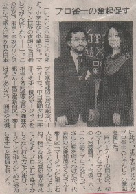

いまや女子プロといえば、どこの団体でも看板スター。毎年たくさんの女子プロが誕生しているので、現在、何人の女子プロがいるのか、よく分からない。
ではそんな女子プロの第１号として看板を上げたのは誰だったのかといえば、それは美人女優でもあった加茂さくらさんらしい。

昭和60年６月、いまから20年前の話し。
加茂さんが、どういう縁で女子プロ第１号としてデビューすることになったのか知らない。たぶん日プロ連会長であった灘麻太郎氏とのつながりか。
もっとも加茂さんを女子プロ第１号と云ってしまうと、語弊もある。このときデビューしたのは、加茂さん一人ではないからだ。ほかにも11人、同時にデビューした。加茂さんは有名人だったので、その代表格という感じ。云うなら女子プロ１期生。
しかしプロ雀界活性化のためと立ち上げたのはいいけれど、女子プロ集団、いつのまにか自然消滅してしまった。どうして自然消滅してしまったのか、よく分からない。聞いてる話も、どこまでたしかな話しか分からない。
そこで勝手に思へらく。
興味半分で女子プロの看板を上げてはみたが、とくに顔を出す場所もない。月刊雑誌で話題として取り上げられても、別にプロ、プロと云って持てはやしてくれるわけではない。
せいぜい日プロ連の関係した大会にときどき参加して麻雀をうつだけ。つまらなくなって参加しなくなった→自然消滅、というところじゃないかしらん。
|